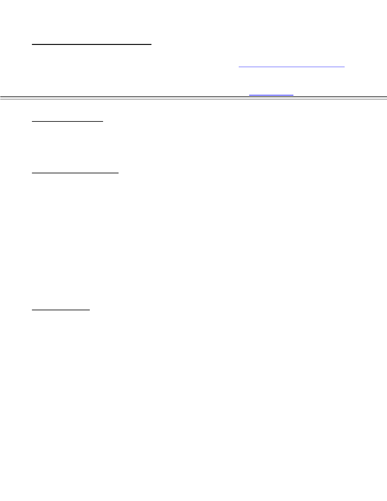

Curriculum Vitae
Kunal Ghosh Email: kunalghoshkatras@gmail.com
House no: C-313, Mobile: +91-8800289656
Galli number: 9, Majlis Park Skype: kunalghosh2
New Delhi, Pincode-110033 LinkedIn: Kunal Ghosh
CAREER OBJECTIVE
To be an invaluable IT resource for a well-respected organization that will provide an
atmosphere conducive to my professional and personal growth and to pursue a challenging and
rewarding career in Software Testing and Quality Assurance Engineering.
PROFESSIONAL PROFILE
Around 5.5+ years of skillful experience in various types and tools of Software Testing and
verification and validation of Quality and functionality of application.
Developed interpersonal and communication skills, having dealt with a diversity of clients,
staff members.
Strong skills on using Office applications, Internet browsing and optimized searching.
Creativity & Learning Curve – have a short learning curve, & can adapt to any new
technology and technique quickly.
Self-motivated; able to set effective priorities and implement decisions to meet operational
deadlines.
Adapt easily to new concepts and responsibilities and succeed in the path of mastering them.
Built rapport with customers through effective and precise communication.
Sense of responsibility, Hardworking, Decisiveness & Resourceful.
TESTING SKILLS
Functional testing on each and every component of an application.
Testing the integration of an application, based on business transaction scenarios.
Regression testing after bug fixing and verified that the fixes didn’t create problems
elsewhere.
Very Good understanding of Software Development Life Cycle (SDLC) and Software Test
Life Cycle (STLC)
Proficient in writing Test cases by applying Software Testing techniques.
Good knowledge of bug tracking tools like Bugzilla, Gemini and JIRA.
Thorough knowledge of creating and maintaining project documents.
Framework implemented using Selenium Web-Drivers are BDD using JBehave with Java and
Cucumber with Ruby, TestNG which is Maven driven, Behave with Python.
Languages Used: JAVA, Ruby and Python.
Agile Methodology: Followed all associated process in Agile like scrum and participated on
CSM (Certified Scrum Master) workshop in R Systems Internationals Limited.
Very Precise in defining processes for the team, so that efficient and effective work can be
achieved with no bug escalation.
TECHNICAL SKILLS
Operating Systems : MS-DOS, Windows XP, Windows 2000, Mac, Ubuntu.
Databases : MYSQL
Internet Browser : Internet Explorer, Firefox, Chrome, Safari.
Scripting Language : Java Script and JQuery
Programming Languages : Java, Ruby and Python
Testing Tools used : Selenium Web-Driver, Sikuli, Auto-IT, FitNeese etc
Frame work : TestNG, JUnit, Cucumber, Behave, Jbehave etc
WORK EXPERIENCE
June 2015 - till date [Hindustan Times], Gurgaon
Projects Undertaken: Hindustan Times
Designation: Senior Software Engineer (Assistant Manager)
I. Worked for education department of HT Media: We are developing and managing
multiple sites under the domain, the most prominent site among all is HTCampus, which is
all about giving students information about multiple career options around India in the form
of colleges.
Client: Hindustan Times
Location: In-House
Product: HTCampus (www.htcampus.com)
Role: Test Lead
Team Size: 3
Duration: June, 2015 - Present
Responsibilities:
Given an opportunity to set up test environment in HTCampus domain wherein multiple
projects would go LIVE after a quality check.
Process implementation responsibility is on my shoulders.
Able to implement agile methodology within the projects.
Created automated framework using python-selenium in behave framework.
Automated test cases from the scratch, integrated reporting framework within the
behave framework.
Also integrated mailers, cron in the server.
Integrated the framework with Jenkins for automatic triggering.
June 2013 – June 2015 [R Systems Internationals Limited], Noida
Projects Undertaken: R Systems International Limited
Designation: Software Engineer QC Level-II
II. Worked for international client on Social Media domain: We are developing product
from the perception phase. The idea of the project is if somebody got stuck in some of his
projects and project is in critical stage and the persons doing the project are not that level of
expert who can revive from the situation. So they need help or they have to shut down the
project. So in that case, they need our application support. The product comprises multi-
dimensional level of experts who are ready to help you out with a minimal subscription fee.
Client: Attention USA

Location: New York, USA
Product: RANE (Risk Assistance Network and Exchange)
Role: Team Member
Team Size: 12
Duration: Feb, 2014- June, 2015
Responsibilities:
Scripted all the test cases using Selenium Web-driver in Cucumber framework using
Ruby.
Script maintenance and bug fixes are implemented after every release.
Execution of script of various environments.
Created a separate smoke test script for the same application.
Managing the testing team along with development team in agile process.
Distribution of task within the team and participating in various meeting like Sprint
Planning, Retrospective, Sprint Backlog, Scrum meeting as it is Agile based project.
Using Tarantula as test case management tool where we execute manual test cases/test
suite.
Using Team City (TC) as a Continuous Integration Server (CI) where automation test
suite used to executed.
Using Jira more like Project Management tool.
Using Kanban as Jira Plugin in order to see the sprint process with respect to Sprint task.
Tracking all Velocity graph, Burn down Chart etc.
I. Worked for international client on Tele-Media domain: The project works as an
interface between all the Television channels and owner of the Television Content. It can
state in one liner that “it can be a one stop shop for seller and consumer with respect
television content provider”.
Client: Vubiquity
Location: New York, USA
Product: Eclipse
Role: Team Member
Team Size: 10
Duration: June, 2013- Feb, 2014
Responsibilities:
Scripted all the test cases using Selenium Web-driver in Cucumber framework using
Ruby.
Script maintenance and bug fixes are implemented after every release.
Execution of script of various environments.
Created a separate smoke test script for the same application.
Managing the testing team along with development team in agile process.
Distribution of task within the team and participating in various meeting like Sprint
Planning, Retrospective, Sprint Backlog, Scrum meeting as it is Agile based project.
Using Tarantula as test case management tool where we execute manual test cases/test
suite.
Using Team City (TC) as a Continuous Integration Server (CI) where automation test
suite used to executed.
Using Jira more like Project Management tool.
Using Kanban as Jira Plugin in order to see the sprint process with respect to Sprint task.
Tracking all Velocity graph, Burn down Chart etc.
May 2011 – June 2013 [Q.A InfoTech Pvt. Ltd.], Noida
Projects Undertaken: QA InfoTech private Limited
Designation: “Test Automation Engineer”
III. Worked with another International Client on Library Domain project
Details of the project: The project servers as an e-learning portal for students. High level
scholarship programs for students who cannot do regular studies.
Client: Cengage Learning
Location: Farmington Hills, Michigan
Product: Mind Tap
Role: Team Member
Team Size: 4
Duration: Jan 2012- June 2013
Responsibilities:
Scripted all the test cases using Selenium Web-driver which is Maven driven.
Developed the framework as per the client requirement.
Used TestNG as a test runner, MAVEN as a built tool and groovy as a language for coding
the test cases.
Created separate executing scripts which runs in parallel to narrow down the
execution time, which helps in compatibility testing.
Created a separate smoke test script for the same application.
As per client request, we migrated everything into JBehave framework which is
BBD framework
Implemented JBehave framework for Behavioral Driven Development for scripting unit
test.
In JBehave we use Java as a language, TestNG as test runner, Team City as Continuous
Integration server and Maven as a built tool.
Reporting with TestNG and ReportNG.
Automated API’s using SOAPUI for generating the URL.
Execution of script of various environments.
Script maintenance and bug fixes are implemented after every release.
Designation: “Software Testing Engineer”
II. Worked for an International client on a Library Domain project
Details of the project: The project is an industry leader in online learning for adults. It
provides the highest-quality online continuing education courses that are affordable and
easy to use through a network of over 1,800 top colleges and universities.
Client: Cengage Learning
Location: Farmington Hills, Michigan
Product: SAM
Role: Team Member
Team Size: 22
Duration: May 2011- Dec 2011
Responsibilities:
Started with Exploratory Testing of the application.
Performed Functional, Regression, Compatibility and End to End testing of the
application.
Creating Test Cases for each module and testing it accordingly.
Finding out defects and logging it in Gemini.
Regression of defects and updating Test Cases after every sprint.
Held responsible for sending daily project status report to client.
Responsible for assigning tasks to the team members during project iteration.
I. Worked for another International Client on Library Domain project
Details of the project: The project is a well-known e-learning portal which is also associated
to TV channel. It provides online education courses for students as well as for educators.
Client: Cengage Learning
Location: Farmington Hills, Michigan
Product: ed2go
Role: Team Member
Team Size: 22
Duration: May 2011- Dec 2011
Responsibilities:
Performed Functional, Compatibility, Smoke and End to End Testing of the District and
Teacher Dashboard.
Finding out defects and logging it on JIRA
Creating test cases for all the modules and updating them with each sprint.
EDUCATION
2011 B. Tech (Computer Science) from Institute of Technology and Management,
Bhilwara affiliated to RTU.
2007 XII from Saraswati Vidhya Mandir, Sinidih, Dhanbad (C.B.S.E).
2005 X from Jawaharlal Nehru Memorial Senior Secondary School, Digwadih,
Dhanbad (C.B.S.E).
AWARDS & ACTIVITIES
Cleared the QCFLTE (QA InfoTech Certified Foundation Level Test Engineer) exam in first
attempt securing 77% marks and securing 2
nd
position in the batch.
Actively participated in the presentations held at QA InfoTech.
Attained CSM (Certified Scrum Master) workshop at R Systems Internationals Limited
Core member of event organization committee.
Responsible for hiring candidates for automation background within the organization.
STRENGTHS
Adaptability.
Sense of responsibility, Hardworking, Decisiveness & Resourceful.
Can adapt any tools and technology with very ease.
Comfortable in any environment and scenario.
PERSONAL DETAILS
Name : Kunal Ghosh
Father’s Name : Mr. Niranjan Ghosh
Mother’s Name : Mrs. Nila Ghosh
Nationality : Indian
Date of Birth : June 22, 1990
Passport No : L1966471
Languages Known : English and Hindi
Leisure Interests : Listening to music, reading books, playing chess & visiting new places
PLACE: Kunal Ghosh
DATE: